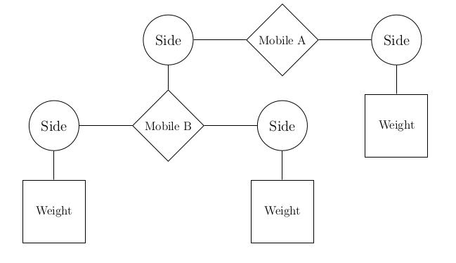
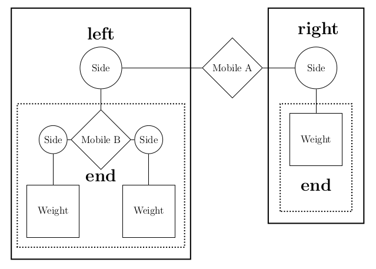

Homework 4 Solutions
Solution Files
You can find the solutions in hw04.py.
Required questions
Abstraction
Q1: Taxicab Distance
An intersection in midtown Manhattan can be identified by an avenue and a street, which are both indexed by positive integers. The Manhattan distance or taxicab distance between two intersections is the number of blocks that must be traversed to reach one from the other, ignoring one-way street restrictions and construction. For example, Times Square is on 46th Street and 7th Avenue. Ess-a-Bagel is on 51st Street and 3rd Avenue. The taxicab distance between them is 9 blocks (5 blocks from 46th to 51st street and 4 blocks from 7th avenue to 3rd avenue). Taxicabs cannot cut diagonally through buildings to reach their destination!
Implement taxicab, which computes the taxicab distance between two
intersections using the following data abstraction. Hint: You don't need to
know what a Cantor pairing function is; just use the abstraction.
def intersection(st, ave):
"""Represent an intersection using the Cantor pairing function."""
return (st+ave)*(st+ave+1)//2 + ave
def street(inter):
return w(inter) - avenue(inter)
def avenue(inter):
return inter - (w(inter) ** 2 + w(inter)) // 2
w = lambda z: int(((8*z+1)**0.5-1)/2)
def taxicab(a, b):
"""Return the taxicab distance between two intersections.
>>> times_square = intersection(46, 7)
>>> ess_a_bagel = intersection(51, 3)
>>> taxicab(times_square, ess_a_bagel)
9
>>> taxicab(ess_a_bagel, times_square)
9
"""
return abs(street(a)-street(b)) + abs(avenue(a)-avenue(b))Use Ok to test your code:
python3 ok -q taxicabThe main focus of this problem is to get familiar with using data abstraction. With some previous problems involving abstract data types, it might have been possible to break the abstraction barrier and still solve the problem. This time around, the abstraction uses the Cantor pairing function to obfuscate the original data!
Through the power of abstraction however, you don't need to understand how the Cantor pairing function works. In truth, we could have also not told you anything about how the abstract data type was implemented. As long as you use the provided selectors, you should be able to solve the problem.
Speaking of which, the selectors give the street and avenue of an
intersection. If we have the street and the avenue for each intersection,
the taxicab distance is just the sum of the absolute difference of the
two.
For more information, Wikipedia has a useful visualization.
Video walkthrough: https://youtu.be/QueVasKQQBI
Mobiles
Acknowledgements. This mobile example is based on a classic problem from Structure and Interpretation of Computer Programs, Section 2.2.2.
Hint: for more information on this problem (with more pictures!) please refer to this document

A mobile is a type of hanging sculpture. A binary mobile consists of two sides. Each side is a rod of a certain length, from which hangs either a weight or another mobile.
{kind=link}

We will represent a binary mobile using the data abstractions below.
- A
mobilehas a leftsideand a rightside. - A
sidehas a positive length and something hanging at the end, either amobileorweight. - A
weighthas a positive size.
Q2: Weights
Implement the weight data abstraction by completing the weight constructor
and the size selector so that a weight is represented using a two-element list
where the first element is the string 'weight'. The total_weight example is
provided to demonstrate use of the mobile, side, and weight abstractions.
def mobile(left, right):
"""Construct a mobile from a left side and a right side."""
assert is_side(left), "left must be a side"
assert is_side(right), "right must be a side"
return ['mobile', left, right]
def is_mobile(m):
"""Return whether m is a mobile."""
return type(m) == list and len(m) == 3 and m[0] == 'mobile'
def left(m):
"""Select the left side of a mobile."""
assert is_mobile(m), "must call left on a mobile"
return m[1]
def right(m):
"""Select the right side of a mobile."""
assert is_mobile(m), "must call right on a mobile"
return m[2]def side(length, mobile_or_weight):
"""Construct a side: a length of rod with a mobile or weight at the end."""
assert is_mobile(mobile_or_weight) or is_weight(mobile_or_weight)
return ['side', length, mobile_or_weight]
def is_side(s):
"""Return whether s is a side."""
return type(s) == list and len(s) == 3 and s[0] == 'side'
def length(s):
"""Select the length of a side."""
assert is_side(s), "must call length on a side"
return s[1]
def end(s):
"""Select the mobile or weight hanging at the end of a side."""
assert is_side(s), "must call end on a side"
return s[2]def weight(size):
"""Construct a weight of some size."""
assert size > 0
return ['weight', size]
def size(w):
"""Select the size of a weight."""
assert is_weight(w), 'must call size on a weight'
return w[1]
def is_weight(w):
"""Whether w is a weight."""
return type(w) == list and len(w) == 2 and w[0] == 'weight'def total_weight(m):
"""Return the total weight of m, a weight or mobile.
>>> t, u, v = examples()
>>> total_weight(t)
3
>>> total_weight(u)
6
>>> total_weight(v)
9
"""
if is_weight(m):
return size(m)
else:
assert is_mobile(m), "must get total weight of a mobile or a weight"
return total_weight(end(left(m))) + total_weight(end(right(m)))Use Ok to test your code:
python3 ok -q total_weightQ3: Balanced
Hint: for more information on this problem (with more pictures!) please refer to this document
Implement the balanced function, which returns whether m is a balanced
mobile. A mobile is balanced if two conditions are met:
- The torque applied by its left side is equal to that applied by its right side. Torque of the left side is the length of the left rod multiplied by the total weight hanging from that rod. Likewise for the right.
- Each of the mobiles hanging at the end of its sides is balanced.
Hint: You may find it helpful to assume that weights themselves are balanced.
def balanced(m):
"""Return whether m is balanced.
>>> t, u, v = examples()
>>> balanced(t)
True
>>> balanced(v)
True
>>> w = mobile(side(3, t), side(2, u))
>>> balanced(w)
False
>>> balanced(mobile(side(1, v), side(1, w)))
False
>>> balanced(mobile(side(1, w), side(1, v)))
False
"""
if is_weight(m):
return True
else:
left_end, right_end = end(left(m)), end(right(m))
torque_left = length(left(m)) * total_weight(left_end)
torque_right = length(right(m)) * total_weight(right_end)
return balanced(left_end) and balanced(right_end) and torque_left == torque_rightUse Ok to test your code:
python3 ok -q balancedThe balanced weights assumption is important, since we will be solving this recursively like many other tree problems (even though this is not explicitly a tree).
Base case: if we are checking a weight, then we know that this is balanced. Why is this an appropriate base case? There are two possible approaches to this:
- Because we know that our data structures so far are trees, weights are the simplest possible tree since we have chosen to implement them as leaves.
- We also know that from an ADT standpoint, weights are the terminal item in a mobile. There can be no further mobile structures under this weight, so it makes sense to stop check here.
- Otherwise: note that it is important to do a recursive call to check if both sides are balanced. However, we also need to do the basic comparison of looking at the total weight of both sides as well as their length. For example if both sides are a weight, trivially, they will both be balanced. However, the torque must be equal in order for the entire mobile to balanced (i.e. it's insufficient to just check if the sides are balanced).
Q4: Totals
Implement totals_tree, which takes a mobile (or weight) and returns a
tree whose root is its total weight and whose branches are trees for the ends
of the sides.
def totals_tree(m):
"""Return a tree representing the mobile with its total weight at the root.
>>> t, u, v = examples()
>>> print_tree(totals_tree(t))
3
2
1
>>> print_tree(totals_tree(u))
6
1
5
3
2
>>> print_tree(totals_tree(v))
9
3
2
1
6
1
5
3
2
"""
if is_weight(m):
return tree(size(m))
else:
branches = [totals_tree(end(f(m))) for f in [left, right]]
return tree(sum([label(b) for b in branches]), branches)Use Ok to test your code:
python3 ok -q totals_treeTrees
Q5: Replace Leaf
Define replace_leaf, which takes a tree t, a value old, and a value new.
replace_leaf returns a new tree that's the same as t except that every leaf
value equal to old has been replaced with new.
def replace_leaf(t, old, new):
"""Returns a new tree where every leaf value equal to old has
been replaced with new.
>>> yggdrasil = tree('odin',
... [tree('balder',
... [tree('thor'),
... tree('freya')]),
... tree('frigg',
... [tree('thor')]),
... tree('thor',
... [tree('sif'),
... tree('thor')]),
... tree('thor')])
>>> laerad = copy_tree(yggdrasil) # copy yggdrasil for testing purposes
>>> print_tree(replace_leaf(yggdrasil, 'thor', 'freya'))
odin
balder
freya
freya
frigg
freya
thor
sif
freya
freya
>>> laerad == yggdrasil # Make sure original tree is unmodified
True
"""
if is_leaf(t) and label(t) == old:
return tree(new)
else:
bs = [replace_leaf(b, old, new) for b in branches(t)]
return tree(label(t), bs)Use Ok to test your code:
python3 ok -q replace_leafNonlocal
Q6: Next Fibonacci
Write a function make_fib that returns a function that returns the
next Fibonacci number each time it is called. (The Fibonacci sequence begins with 0
and then 1, after which each element is the sum of the preceding two.)
Use a nonlocal statement!
def make_fib():
"""Returns a function that returns the next Fibonacci number
every time it is called.
>>> fib = make_fib()
>>> fib()
0
>>> fib()
1
>>> fib()
1
>>> fib()
2
>>> fib()
3
>>> fib2 = make_fib()
>>> fib() + sum([fib2() for _ in range(5)])
12
>>> from construct_check import check
>>> # Do not use lists in your implementation
>>> check(this_file, 'make_fib', ['List'])
True
"""
cur, next = 0, 1
def fib():
nonlocal cur, next
result = cur
cur, next = next, cur + next
return result
return fibUse Ok to test your code:
python3 ok -q make_fibIn between calls to fib, we need to remember how far we have gotten in
the sequence somehow. We do this by track the cur and the next
Fibonacci number, but this also be done by just tracking the current
position in the sequence, and returning something like fib_iter(n).
While this solution works (and is included below), it is quite wasteful in
terms of computation and so we prefer the official solution.
def make_fib():
def fib_iter(n):
cur, next = 0, 1
while n > 0:
cur, next = next, cur + next
n -= 1
return cur
n = 0
def fib():
nonlocal n
result = fib_iter(n)
n += 1
return result
return fibConsider that to calculate fib_iter(n+1), it takes just one more step
after fib_iter(n).
Video walkthrough: https://youtu.be/bSUr0OUISuE
Q7: Password Protected Account
In lecture, we saw how to use functions to create mutable objects.
Here, for example, is the function make_withdraw which produces a
function that can withdraw money from an account:
def make_withdraw(balance):
"""Return a withdraw function with BALANCE as its starting balance.
>>> withdraw = make_withdraw(1000)
>>> withdraw(100)
900
>>> withdraw(100)
800
>>> withdraw(900)
'Insufficient funds'
"""
def withdraw(amount):
nonlocal balance
if amount > balance:
return 'Insufficient funds'
balance = balance - amount
return balance
return withdrawWrite a version of the make_withdraw function that returns
password-protected withdraw functions. That is, make_withdraw should
take a password argument (a string) in addition to an initial balance.
The returned function should take two arguments: an amount to withdraw
and a password.
A password-protected withdraw function should only process
withdrawals that include a password that matches the original. Upon
receiving an incorrect password, the function should:
- Store that incorrect password in a list, and
- Return the string 'Incorrect password'.
If a withdraw function has been called three times with incorrect
passwords <p1>, <p2>, and <p3>, then it is locked. All subsequent
calls to the function should return:
"Your account is locked. Attempts: [<p1>, <p2>, <p3>]"The incorrect passwords may be the same or different:
def make_withdraw(balance, password):
"""Return a password-protected withdraw function.
>>> w = make_withdraw(100, 'hax0r')
>>> w(25, 'hax0r')
75
>>> error = w(90, 'hax0r')
>>> error
'Insufficient funds'
>>> error = w(25, 'hwat')
>>> error
'Incorrect password'
>>> new_bal = w(25, 'hax0r')
>>> new_bal
50
>>> w(75, 'a')
'Incorrect password'
>>> w(10, 'hax0r')
40
>>> w(20, 'n00b')
'Incorrect password'
>>> w(10, 'hax0r')
"Your account is locked. Attempts: ['hwat', 'a', 'n00b']"
>>> w(10, 'l33t')
"Your account is locked. Attempts: ['hwat', 'a', 'n00b']"
>>> type(w(10, 'l33t')) == str
True
"""
attempts = []
def withdraw(amount, password_attempt):
nonlocal balance
if len(attempts) == 3:
return 'Your account is locked. Attempts: ' + str(attempts)
if password_attempt != password:
attempts.append(password_attempt)
return 'Incorrect password'
if amount > balance:
return 'Insufficient funds'
balance = balance - amount
return balance
return withdrawUse Ok to test your code:
python3 ok -q make_withdrawA couple of things to note:
- The
attemptslist does not need to be nonlocal. We're just mutating the list here, not reassigning it. - The last few lines of our
withdrawfunction are the same as thewithdrawfrom lecture. There isn't much to add on top of that -- just the list operations and the password checks.
Video walkthrough: https://youtu.be/YyjQoug0Mtg
Q8: Joint Account
Suppose that our banking system requires the ability to make joint
accounts. Define a function make_joint that takes three arguments.
- A password-protected
withdrawfunction, - The password with which that
withdrawfunction was defined, and - A new password that can also access the original account.
The make_joint function returns a withdraw function that provides
additional access to the original account using either the new or old
password. Both functions draw from the same balance. Incorrect
passwords provided to either function will be stored and cause the
functions to be locked after three wrong attempts.
Hint: The solution is short (less than 10 lines) and contains no string
literals! The key is to call withdraw with the right password and amount,
then interpret the result. You may assume that all failed attempts to withdraw
will return some string (for incorrect passwords, locked accounts, or
insufficient funds), while successful withdrawals will return a number.
Use type(value) == str to test if some value is a string:
def make_joint(withdraw, old_password, new_password):
"""Return a password-protected withdraw function that has joint access to
the balance of withdraw.
>>> w = make_withdraw(100, 'hax0r')
>>> w(25, 'hax0r')
75
>>> make_joint(w, 'my', 'secret')
'Incorrect password'
>>> j = make_joint(w, 'hax0r', 'secret')
>>> w(25, 'secret')
'Incorrect password'
>>> j(25, 'secret')
50
>>> j(25, 'hax0r')
25
>>> j(100, 'secret')
'Insufficient funds'
>>> j2 = make_joint(j, 'secret', 'code')
>>> j2(5, 'code')
20
>>> j2(5, 'secret')
15
>>> j2(5, 'hax0r')
10
>>> j2(25, 'password')
'Incorrect password'
>>> j2(5, 'secret')
"Your account is locked. Attempts: ['my', 'secret', 'password']"
>>> j(5, 'secret')
"Your account is locked. Attempts: ['my', 'secret', 'password']"
>>> w(5, 'hax0r')
"Your account is locked. Attempts: ['my', 'secret', 'password']"
>>> make_joint(w, 'hax0r', 'hello')
"Your account is locked. Attempts: ['my', 'secret', 'password']"
"""
error = withdraw(0, old_password)
if type(error) == str:
return error
def joint(amount, password_attempt):
if password_attempt == new_password:
return withdraw(amount, old_password)
return withdraw(amount, password_attempt)
return jointUse Ok to test your code:
python3 ok -q make_jointTo make sure that we correctly created the joint account, we attempt to
withdraw 0 from it using the supplied password. If this failed, we
should exit immediately without creating the account, following the
guidance in the doctests.
Otherwise, we have successfully created the joint account! We now know the old password is valid, but remember that the original password-protected account does not know about any new passwords that a joint account might accept. Therefore, when we see something matching the new password, we still have to access the account using the old password.
Video walkthrough: https://youtu.be/h5MvIM1k1II
Extra Questions
Q9: Interval Abstraction
Alyssa's program is incomplete because she has not specified the implementation of the interval abstraction. She has implemented the constructor for you; fill in the implementation of the selectors.
def interval(a, b):
"""Construct an interval from a to b."""
assert a <= b, 'Lower bound cannot be greater than upper bound' return [a, b]
def lower_bound(x):
"""Return the lower bound of interval x."""
return x[0]
def upper_bound(x):
"""Return the upper bound of interval x."""
return x[1]Use Ok to unlock and test your code:
python3 ok -q interval -u
python3 ok -q intervalLouis Reasoner has also provided an implementation of interval multiplication. Beware: there are some data abstraction violations, so help him fix his code before someone sets it on fire.
def mul_interval(x, y):
"""Return the interval that contains the product of any value in x and any
value in y."""
p1 = x[0] * y[0]
p2 = x[0] * y[1]
p3 = x[1] * y[0]
p4 = x[1] * y[1]
return [min(p1, p2, p3, p4), max(p1, p2, p3, p4)]Use Ok to unlock and test your code:
python3 ok -q mul_interval -u
python3 ok -q mul_intervalVideo walkthrough: https://youtu.be/RiLrqgBm4Dk
Q10: Sub Interval
Using reasoning analogous to Alyssa's, define a subtraction function for intervals. Try to reuse functions that have already been implemented if you find yourself repeating code.
def sub_interval(x, y):
"""Return the interval that contains the difference between any value in x
and any value in y."""
negative_y = interval(-upper_bound(y), -lower_bound(y))
return add_interval(x, negative_y)Use Ok to unlock and test your code:
python3 ok -q sub_interval -u
python3 ok -q sub_intervalVideo walkthrough: https://youtu.be/s37VvawB0vE
Q11: Div Interval
Alyssa implements division below by multiplying by the reciprocal of
y. Ben Bitdiddle, an expert systems programmer, looks over Alyssa's
shoulder and comments that it is not clear what it means to divide by
an interval that spans zero. Add an assert statement to Alyssa's code
to ensure that no such interval is used as a divisor:
def div_interval(x, y):
"""Return the interval that contains the quotient of any value in x divided by
any value in y. Division is implemented as the multiplication of x by the
reciprocal of y."""
assert not (lower_bound(y) <= 0 <= upper_bound(y)), 'Divide by zero' reciprocal_y = interval(1/upper_bound(y), 1/lower_bound(y))
return mul_interval(x, reciprocal_y)Use Ok to unlock and test your code:
python3 ok -q div_interval -u
python3 ok -q div_intervalVideo walkthrough: https://youtu.be/jNR7tmV1lMk
Q12: Multiple References
Eva Lu Ator, another user, has also noticed the different intervals computed by different but algebraically equivalent expressions. She says that the problem is multiple references to the same interval.
The Multiple References Problem: a formula to compute with intervals using Alyssa's system will produce tighter error bounds if it can be written in such a form that no variable that represents an uncertain number is repeated.
Thus, she says, par2 is a better program for parallel resistances
than par1. Is she right? Why? Write a function that returns a string
containing a written explanation of your answer:
def multiple_references_explanation():
return """The multiple reference problem exists. The true value
within a particular interval is fixed (though unknown). Nested
combinations that refer to the same interval twice may assume two different
true values for the same interval, which is an error that results in
intervals that are larger than they should be.
Consider the case of i * i, where i is an interval from -1 to 1. No value
within this interval, when squared, will give a negative result. However,
our mul_interval function will allow us to choose 1 from the first
reference to i and -1 from the second, giving an erroneous lower bound of
-1.
Hence, a program like par2 is better than par1 because it never combines
the same interval more than once.
"""Video walkthrough: https://youtu.be/H8slb5KCbU4
Q13: Quadratic
Write a function quadratic that returns the interval of all values
f(t) such that t is in the argument interval x and f(t) is a
quadratic function:
f(t) = a*t*t + b*t + cMake sure that your implementation returns the smallest such interval, one that does not suffer from the multiple references problem.
Hint: the derivative f'(t) = 2*a*t + b, and so the extreme
point of the quadratic is -b/(2*a):
def quadratic(x, a, b, c):
"""Return the interval that is the range of the quadratic defined by
coefficients a, b, and c, for domain interval x.
>>> str_interval(quadratic(interval(0, 2), -2, 3, -1))
'-3 to 0.125'
>>> str_interval(quadratic(interval(1, 3), 2, -3, 1))
'0 to 10'
"""
extremum = -b / (2*a)
f = lambda x: a * x * x + b * x + c
l, u, e = map(f, (lower_bound(x), upper_bound(x), extremum))
if extremum >= lower_bound(x) and extremum <= upper_bound(x):
return interval(min(l, u, e), max(l, u, e))
else:
return interval(min(l, u), max(l, u))Use Ok to test your code:
python3 ok -q quadraticVideo walkthrough: https://youtu.be/qgSn_RNBs4A